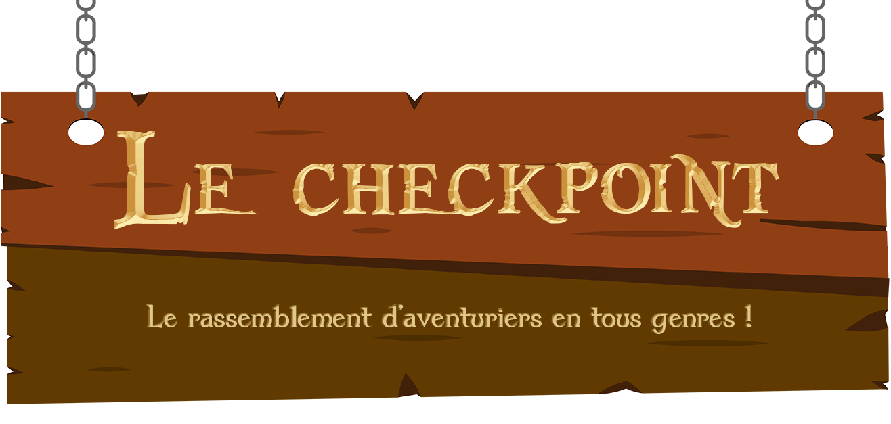

<div class="main-container">
  <mat-card *ngFor="let article of (dataSource | async)?.items" style="margin-top: 1.5rem;">
    <div style class="container">
      <div class="img-container">
        
        <ng-template #placeHolderImage>
          
        </ng-template>
      </div>
      <div>
        <h2 class="article-title">{{article.title}}</h2>
        <p>{{article.description}}</p>
        <div class="metadata">
          <small>{{article.author?.username}} | </small>
          <small>{{article.createdAt | date: 'd MMMM yyyy, à HH:mm'}}</small>
        </div>
      </div>


    </div>
  </mat-card>
  <mat-paginator
  [length]="(dataSource | async)?.meta?.totalItems"
  [pageSize]="(dataSource | async)?.meta?.itemsPerPage"
  [pageSizeOptions]="[5,10,25,100]"
  (page)="pageEvent = $event; onPaginateChange($event)"
  showFirstLastButtons>
  </mat-paginator>
</div>
